ねこしる

ねこしるって？
ねこはどんなふうに生きているんだろう？見ているもの、感じていることも私たちと全く別かもしれない。
ねこを知り、ねこの生きる世界を見てみよう！
ねこを知り、ねこの生きる世界を見てみよう！
ねこしる
2025年12月8日作成
大正大学表現学部表現文化学科
情報文化デザイン（編集）コース
企画・取材・デザイン： 大和翔理
2025年12月8日作成
大正大学表現学部表現文化学科
情報文化デザイン（編集）コース
企画・取材・デザイン： 大和翔理

0
実はこう見えてる！？

ねこは液体？
ねこは液体？
ねこは液体。なんて聞いたことはありますか？箱に入ると体がピッタリ収まり、体が液体のように自由に変形することから言われています。
なぜそんなに自由に動くのか、その秘密は「骨の数」にあるのです。
人間には約 200個の骨がありますが、ねこは約140個の骨があります！人よりも小さな体で多くの骨を持っているんですね。そのおかげで体がたくさん曲がるようになっています。
特に背中の骨がたくさんあり、その間がよく曲がるようになっています。
さらに、肩の骨が小さく、他の骨とあまりくっついていないため、人間のようにガッチリと固定されていません。このおかげで、グニャグニャと体を曲げたり、して液体のように体の形を変化できるのです！

4
テキスト

5
テキスト

キラッと光る目のヒミツ
キラッと光る目のヒミツ
ねこの目が、夜中にキラッと光るのを見たことはありませんか？
あれは、暗いところでもよく見えるように目が機能しているからなんです。
人間が「明るい！」と感じる光の量と比べて、ネコちゃんはたった 6分の1の光でも、十分ものを見ることができます。
そのため、まっ暗な中でも、動いているものの「かたち」や「影」を素早く見つけられます。夜でも動き回る小さな獲物を逃さず見つけることができるのは、この特別な目のおかげなのですね！


イ
テキスト

14
テキスト

15
テキスト
足音で誰かわかる！？猫の耳のヒミツ
足音で誰かわかる！？猫の耳のヒミツ
ねこは人間が聞ける音の高さ（周波数）と比べて、３倍以上も高い音まで聞くことができます。
普段聞いている家族の歩く速さや足のつき方のわずかな違いを、音で聞き分けていると考えられています。
誰かを見なくても足音でわかってしまうなんて、とても鋭い感覚なんですね！

22
テキスト

24
テキスト

25
テキスト

26
テキスト

28
テキスト

30
テキスト
 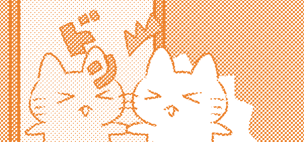
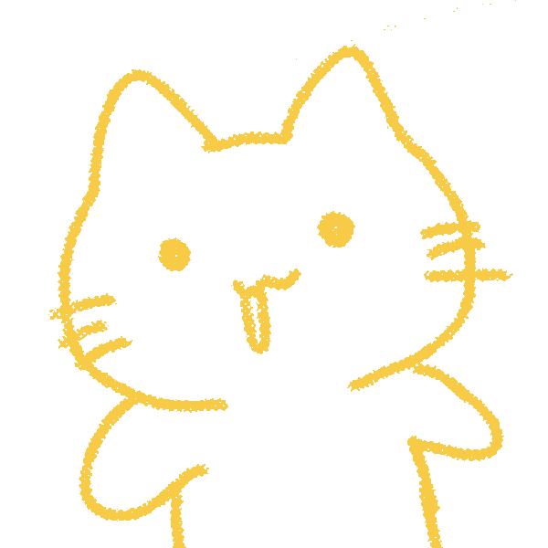
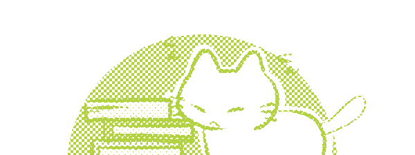
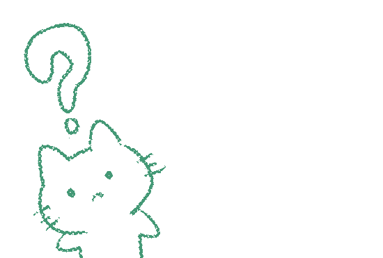
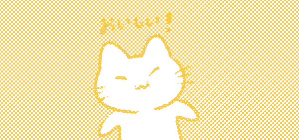
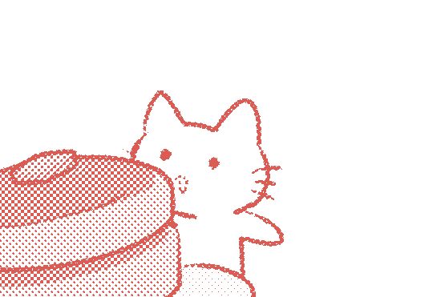
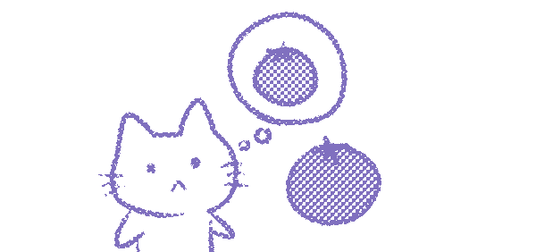
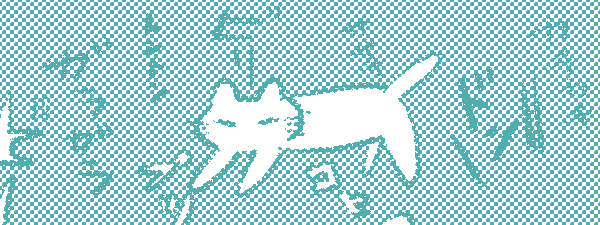
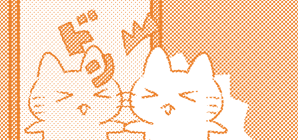
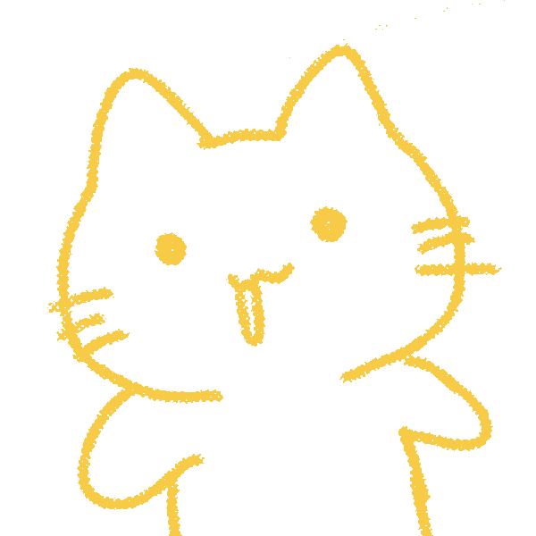
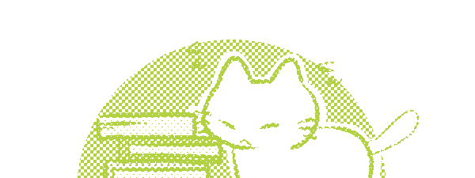
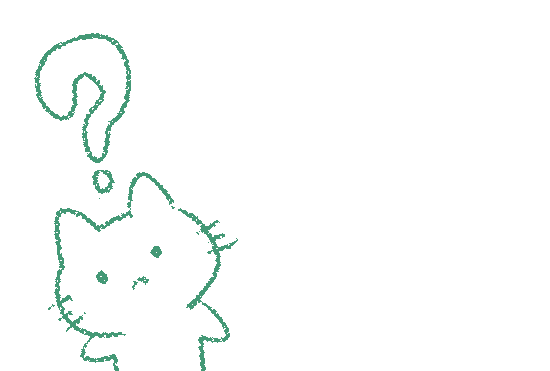
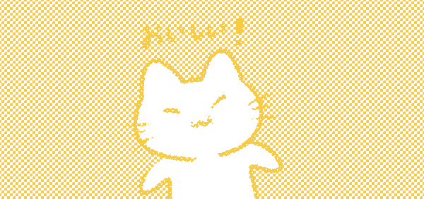
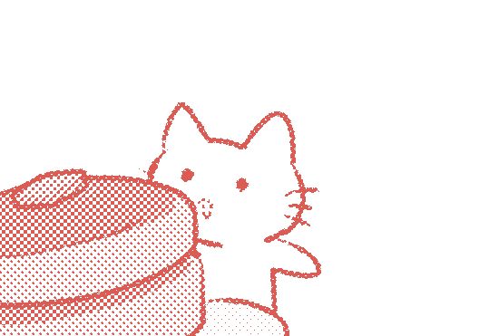
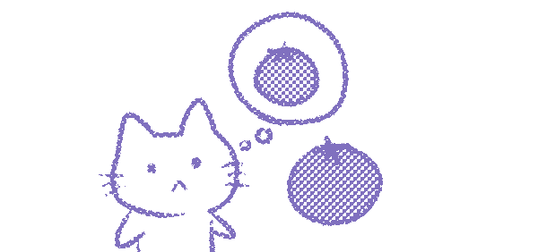
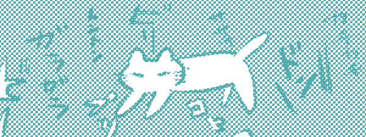
 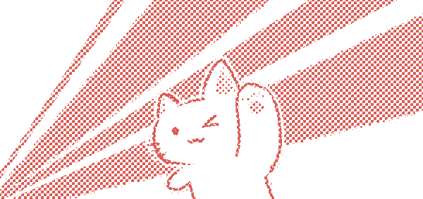
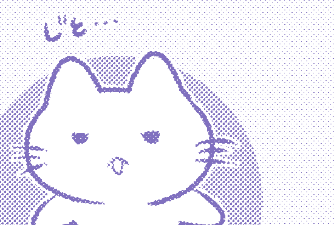
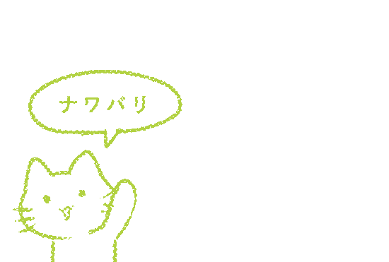
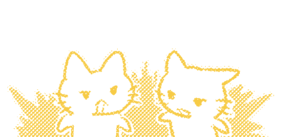
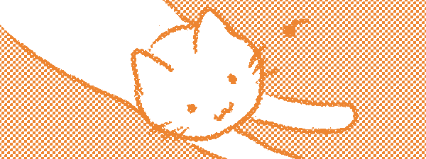
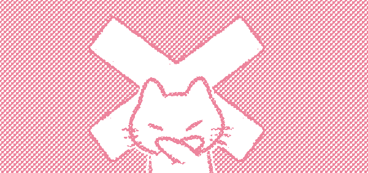
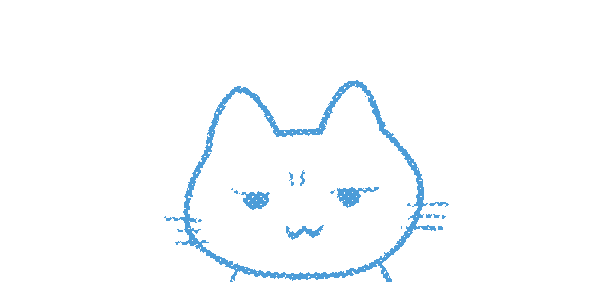
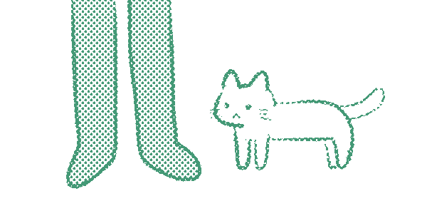
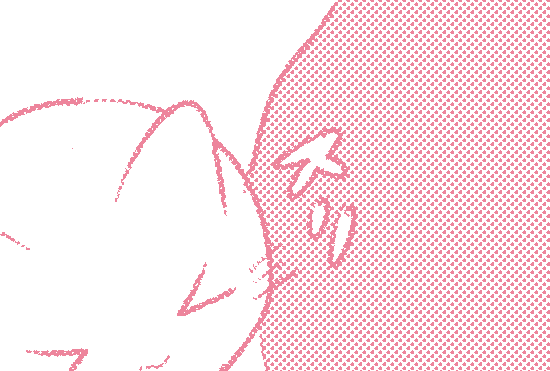
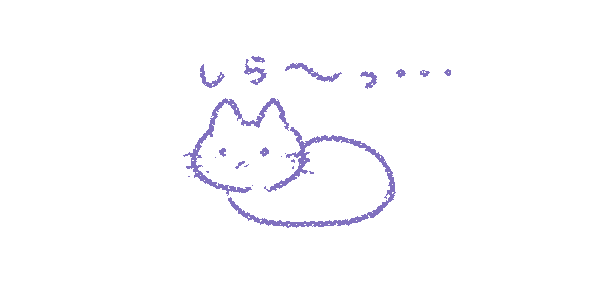
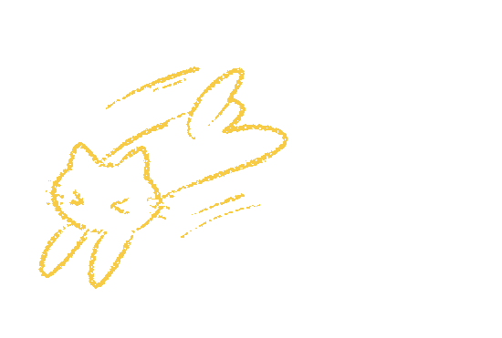
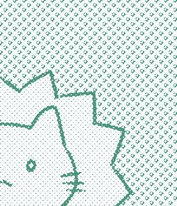
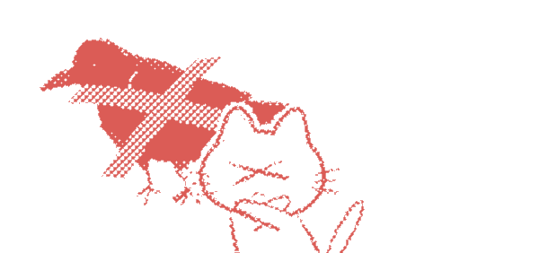
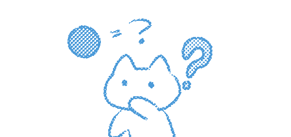
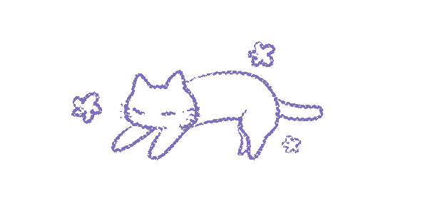
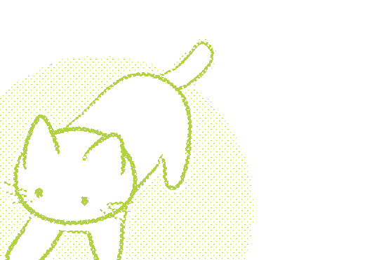
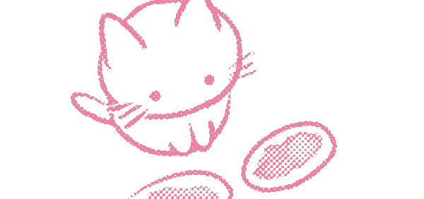
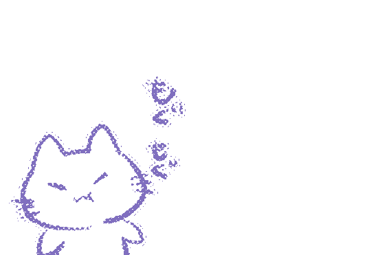
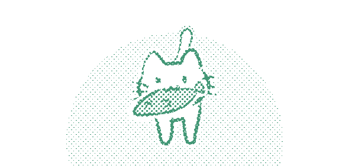
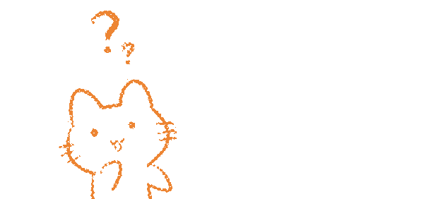
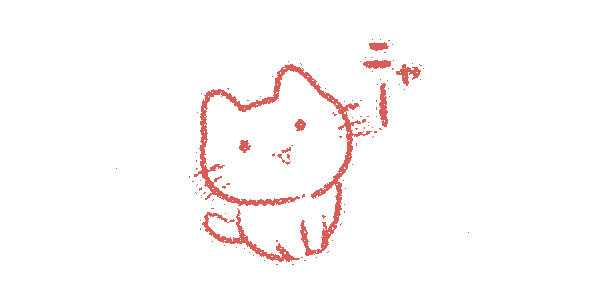
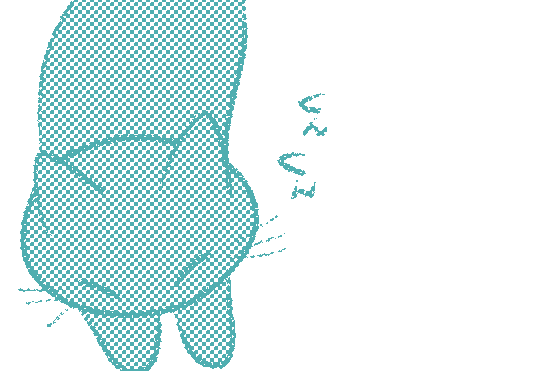
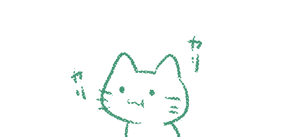
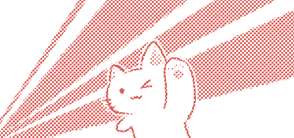
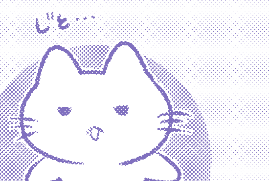
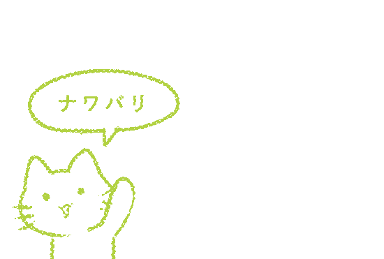
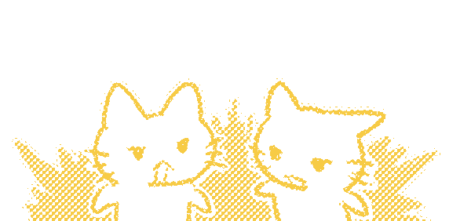
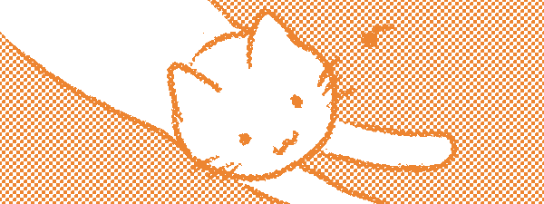
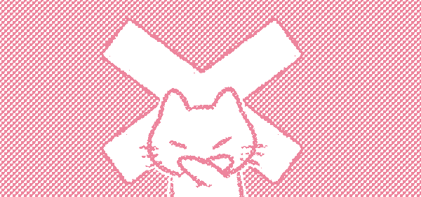
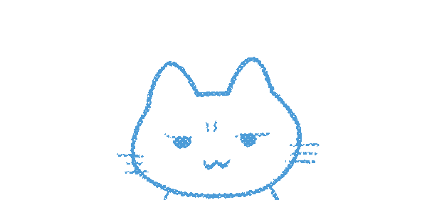
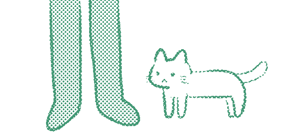
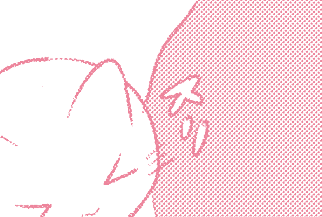
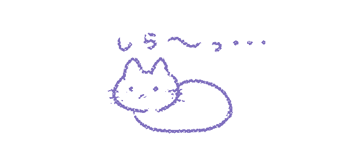
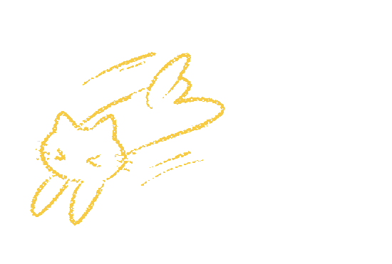


 


画面を上下左右に動かして、気になるねこの世界をのぞいてみよう！